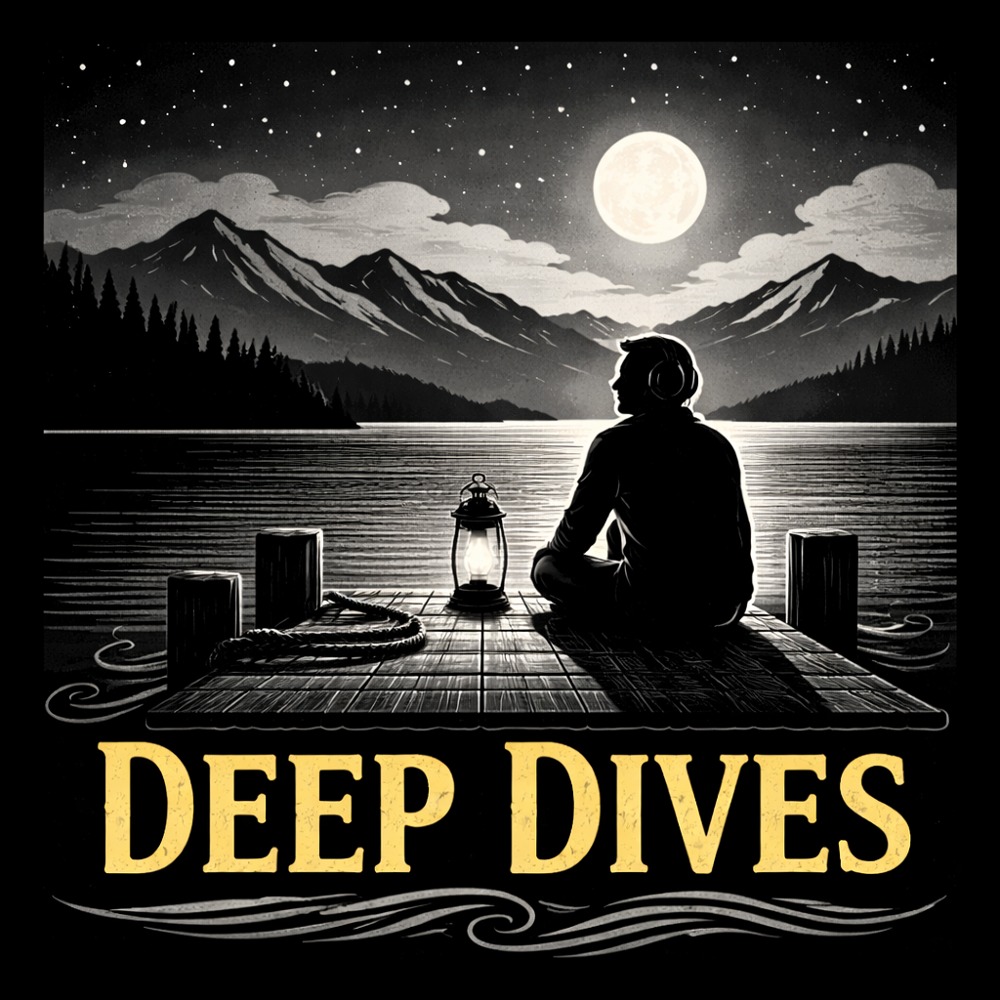

Long-form debates on the topics that matter
When enough people seed the same topic, Riley and Casey go deep. These are longer, less structured conversations — politics, philosophy, economics, technology — built from curated sources and expanded with credible coverage. No weekly schedule. Episodes appear when there's enough to say.
Tech optimist with an engineering background and rural roots in the Cariboo region. Genuinely believes technology can transform rural communities for the better — broadband, AI tools, precision agriculture, telemedicine. But backs every claim with evidence: real deployments, named communities, measurable outcomes, and honest timelines. Not naive — she tracks record of predictions and concedes when the evidence points somewhere inconvenient.
"What does the evidence actually show?"
"Where has this already worked in a small community?"
"How would we know if this were wrong?"
Community development advocate in the Cariboo region with a healthy skepticism toward tech industry promises. Follows the money, the incentives, the power structures, and the long historical patterns behind every shiny announcement. Deeply interested in digital equity and Indigenous-led innovation, but demands evidence over hype. Believes data without context is just numbers — and that the framing of a question often reveals whose interests are being served.
"Who actually benefits from this?"
"What historical pattern does this repeat?"
"Whose interests does this framing serve, and whose does it obscure?"
Add this feed to any podcast app that accepts an RSS URL: